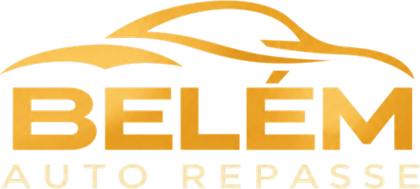

Produto com IA · em uso realBelém Auto Repasse
App web para um negócio de repasse de veículos · 13 etapas em 9 dias · out–nov/2026
App que reúne num só lugar a consulta do veículo (placa, dados e FIPE) e a criação do anúncio, antes feitas em ferramentas separadas, carro a carro, num negócio com mais de 20 carros por semana. Da placa e de um áudio narrado saem a ficha conferida, o anúncio do WhatsApp, as artes com fotos e o histórico FIPE. Conduzi o projeto como dona do produto, com o Claude Code programando.
- 8–10 → 4–5 minpor anúncio (6 anúncios cronometrados em cada método, nov/2026)
- Mais de 15fichas reais criadas pelo usuário desde a entrega
- 136decisões documentadas
- 198testes automatizados
- 0 errosdos 2 LLMs avaliados num gabarito de 11 casos
- 18× menorcusto do modelo adotado, com a mesma precisão
- ≈ R$ 26de operação prevista por mês